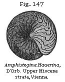

The Student’s Elements of Geology
Upper Miocene Strata of France—Faluns of Touraine. — Tropical Climate implied by Testacea. — Proportion of recent Species of Shells. — faluns more ancient than the Suffolk Crag. — Upper Miocene of Bordeaux and the South of France. — Upper Miocene of Œningen, in Switzerland. — Plants of the Upper Fresh-water Molasse. — Fossil Fruit and Flowers as well as Leaves. — Insects of the Upper Molasse. — Middle or Marine Molasse of Switzerland. — Upper Miocene Beds of the Bolderberg, in Belgium. — Vienna Basin. — Upper Miocene of Italy and Greece. — Upper Miocene of India; Siwalik Hills. — Older Pliocene and Miocene of the United States.
Upper Miocene Strata of France—Faluns of Touraine.—The strata which we meet with next in the descending order are those called by many geologists “Middle Tertiary,” for which in 1833 I proposed the name of Miocene, selecting the “faluns” of the valley of the Loire, in France, as my example or type. I shall now call these falunian deposits Upper Miocene, to distinguish them from others to which the name of Lower Miocene will be given.
No British strata have a distinct claim to be regarded as Upper Miocene, and as the Lower Miocene are also but feebly represented in the British Isles, we must refer to foreign examples in illustration of this important period in the earth’s history. The term “faluns” is given provincially by French agriculturists to shelly sand and marl spread over the land in Touraine, just as similar shelly deposits were formerly much used in Suffolk to fertilise the soil, before the coprolitic or phosphatic nodules came into use. Isolated masses of such faluns occur from near the mouth of the Loire, in the neighbourhood of Nantes, to as far inland as a district south of Tours. They are also found at Pontlevoy, on the Cher, about seventy miles above the junction of that river with the Loire, and thirty miles south-east of Tours. Deposits of the same age also appear under new mineral conditions near the towns of Dinan and Rennes, in Brittany. I have visited all the localities above enumerated, and found the beds on the Loire to consist principally of sand and marl, in which are shells and corals, some entire, some rolled, and others in minute fragments. In certain districts, as at Doué, in the Department of Maine and Loire, ten miles south-west
of Saumur, they form a soft building-stone, chiefly composed of an aggregate of broken shells, bryozoa, corals, and echinoderms, united by a calcareous cement; the whole mass being very like the Coralline Crag near Aldborough, and Sudbourn in Suffolk. The scattered patches of faluns are of slight thickness, rarely exceeding fifty feet; and between the district called Sologne and the sea they repose on a great variety of older rocks; being seen to rest successively upon gneiss, clay-slate, various secondary formations, including the chalk; and, lastly, upon the upper fresh-water limestone of the Parisian tertiary series, which, as before mentioned (p. 142), stretches continuously from the basin of the Seine to that of the Loire.
At some points, as at Louans, south of Tours, the shells are stained of a ferruginous colour, not unlike that of the Red Crag of Suffolk. The species are, for the most part, marine, but a few of them belong to land and fluviatile genera. Among the former, Helix turonensis) (Fig. 38) is the most abundant. Remains of terrestrial quadrupeds are here and there intermixed, belonging to the genera Dinotherium (Fig. 136), Mastodon, Rhinoceros, Hippopotamus, Chæropotamus, Dichobune, Deer, and others, and these are accompanied by cetacea, such as the Lamantin, Morse, Sea-calf, and Dolphin, all of extinct species.
The fossil testacea of the faluns of the Loire imply, according to the late Edward Forbes, that the beds were formed partly on the shore itself at the level of low water, and partly at very moderate depths, not exceeding ten fathoms below that level. The molluscan fauna is, on the whole, much more littoral than that of the Pliocene Red and Coralline Crag of Suffolk, and implies a shallower sea. It is, moreover, contrasted with the Suffolk Crag by the indications it affords of an extra-European climate. Thus it contains seven species of Cypræa, some larger than any existing cowry of the Mediterranean, several species of Oliva, Ancillaria, Mitra, Terebra, Pyrula, Fasciolaria, and Conus. Of the cones there are no less than eight species, some very large, whereas the only European cone now living is of diminutive size. The genus Nerita, and many others, are also represented by individuals
of a type now characteristic of equatorial seas, and wholly unlike any Mediterranean forms. These proofs of a more elevated temperature seem to imply the higher antiquity of the faluns as compared with the Suffolk Crag, and are in perfect accordance with the fact of the smaller proportion of testacea of recent species found in the faluns.
Out of 290 species of shells, collected by myself in 1840 at Pontlevoy, Louans, Bossée, and other villages twenty miles south of Tours, and at Savigné, about fifteen miles north-west of that place, seventy-two only could be identified with recent species, which is in the proportion of twenty-five per cent. A large number of the 290 species are common to all the localities, those peculiar to each not being more numerous than we might expect to find in different bays of the same sea.
The total number of species of testaceous mollusca from the faluns in my possession is 302, of which forty-five only, or fourteen per cent, were found by Mr. Wood to be common to the Suffolk Crag. The number of corals, including bryozoa and zoantharia, obtained by me at Doué and other localities before adverted to, amounts to forty-three, as determined by Mr. Lonsdale, of which seven (one of them a zoantharian) agree specifically with those of the Suffolk Crag. Some of the genera occurring fossil in Touraine, as the corals Astrea and Dendrophyllia, and the bryozoan Lunulites, have not been found in European seas north of the Mediterranean; nevertheless, the zoantharia of the faluns do not seem to indicate, on the whole, so warm a climate as would be inferred from the shells.
It was stated that, on comparing about 300 species of Touraine shells with about 450 from the Suffolk Crag, forty-five only were found to be common to both, which is in the proportion of only fifteen per cent. The same small amount of agreement is found in the corals also. I formerly endeavoured to reconcile this marked difference in species with the supposed co-existence of the two faunas, by imagining them to have severally belonged to distinct zoological provinces or two seas, the one opening to the north and the other to the south, with a barrier of land between them, like the Isthmus of Suez, now separating the Red Sea and the Mediterranean. But I now abandon that idea for several reasons; among others, because I succeeded in 1841 in tracing the Crag fauna southward in Normandy to within seventy miles of the Falunian type, near Dinan, yet found that both assemblages of fossils retained their distinctive characters, showing no signs of any blending of species or transition of climate.
The principal grounds, however, for referring the English Crag to the older Pliocene and the French faluns to the Upper Miocene epochs, consist in the predominance of fossil shells in the British strata identifiable with species not only still living, but which are now inhabitants of neighbouring seas, while the accompanying extinct species are of genera such as characterise Europe. In the faluns, on the contrary, the recent species are in a decided minority; and most of them are now inhabitants of the Mediterranean, the coast of Africa, and the Indian Ocean; in a word, less northern in character, and pointing to the prevalence of a warmer climate. They indicate a state of things receding farther from the present condition of Central Europe in physical geography and climate, and doubtless, therefore, receding farther from our era in time.
Among the conspicuous fossils common to the faluns of the Loire and the Suffolk Crag is a variety of the Voluta Lamberti, a shell already alluded to (Fig. 123). The specimens of this shell which I have myself collected in Touraine, or have seen in museums, are thicker and heavier than British individuals of the same species, and shorter in proportion to their width, and have the folds on the columella less oblique, as represented in Fig. 137.
Upper Miocene of Bordeaux and the South of France.—A great extent of country between the Pyrenees and the Gironde is overspread by tertiary deposits of various ages, and chiefly of Miocene date. Some of these, near Bordeaux, coincide in age with the faluns of Touraine, already mentioned, but many of the species of shells are peculiar to the south. The succession of beds in the basin of the Gironde implies several oscillations of level by which the same wide area was alternately converted into sea and land and into brackish-water lagoons, and finally into fresh-water ponds and lakes.
Among the fresh-water strata of this age near the base of the Pyrenees are marls, limestones and sands, in which the eminent comparative anatomist, M. Lartet, has obtained a great number of fossil mammalia common to the faluns of the Loire and the Upper Miocene beds of Switzerland, such as Dinotherium giganteum and Mastodon angustidens; also
the bones of quadrumana, or of the ape and monkey tribe, which were discovered in 1837, the first of that order of quadrupeds detected in Europe. They were found near Auch, in the Department of Gers, in latitude 43° 39' N. About forty miles west of Toulouse. They were referred by MM. Lartet and Blainville to a genus closely allied to the Gibbon, to which they gave the name of Pliopithecus. Subsequently, in 1856, M. Lartet described another species of the same family of long-armed apes (Hylobates), which he obtained from strata of the same age at Saint-Gaudens, in the Haute Garonne. The fossil remains of this animal consisted of a portion of a lower jaw with teeth and the shaft of a humerus. It is supposed to have been a tree-climbing frugivorous ape, equalling man in stature. As the trunks of oaks are common in the lignite beds in which it lay, it has received the generic name of Dryopithecus. The angle formed by the ascending ramus of the jaw and the alveolar border is less open, and therefore more like the human subject, than in the Chimpanzee, and what is still more remarkable, the fossil, a young but adult individual, had all its milk teeth replaced by the second set, while its last true molar (or wisdom-tooth) was still undeveloped, or only existed as a germ in the jaw-bone. In the mode, therefore, of the succession of its teeth (which, as in all the old-World apes, exactly agree in number with those in man) it differed from the Gorilla and Chimpanzee, and corresponded with the human species.
Upper Miocene Beds of Œningen, in Switzerland.—The faluns of the Loire first served, as already stated (p. 211), as the type of the Miocene formations in Europe. They yielded a plentiful harvest of marine fossil shells and corals, but were entirely barren of plants and insects. In Switzerland, on the other hand, deposits of the same age have been discovered, remarkable for their botanical and entomological treasures. We are indebted to Professor Heer, of Zurich, for the description, restoration, and classification of several hundred species and varieties of these fossil plants, the whole of which he has illustrated by excellent figures in his “Flora Tertiaria Helvetiæ.” This great work, and those of Adolphe Brongniart, Unger, Goppert and others, show that this class of fossils is beginning to play the same important part in the classification of the tertiary strata containing lignite or brown coal as an older flora has long played in enabling us to understand the ancient coal or carboniferous formation. No small skepticism has always prevailed among botanists as to whether the leaves alone and the wood of plants could
ever afford sufficient data for determining even genera and families in the vegetable kingdom. In truth, before such remains could be rendered available a new science had to be created. It was necessary to study the outlines, nervation, and microscopic structure of the leaves, with a degree of care which had never been called for in the classification of living plants, where the flower and fruit afforded characters so much more definite and satisfactory. As geologists, we can not be too grateful to those who, instead of despairing when so difficult a task was presented to them, or being discouraged when men of the highest scientific attainments treated the fossil leaves as worthless, entered with full faith and enthusiasm into this new and unexplored field. That they should frequently have fallen into errors was unavoidable, but it is remarkable, especially if we inquire into the history of Professor Heer’s researches, how often early conjectures as to the genus and family founded on the leaves alone were afterwards confirmed when fuller information was obtained. As examples to be found on comparing Heer’s earlier and later works, I may instance the chestnut, elm, maple, cinnamon, magnolia, buckbean or Menyanthes, vine, buckthorn (Rhamnus), Andromeda and Myrica, and among the conifers Sequoia and Taxodium. In all these cases the plants were first recognised by their leaves, and the accuracy of the determination was afterwards confirmed when the fruit, and in some instances both fruit and flower, were found attached to the same stem as the leaves.
But let us suppose that no fruit, seed, or flower had ever been met with in a fossil state, we should still have been indebted to the persevering labours of botanical palæontologists for one of the grandest scientific discoveries for which the present century is remarkable—namely, the proofs now established of the prevalence of a mild climate and a rich arborescent flora in the arctic regions in that Miocene epoch on the history of which we are now entering. It may be useful if I endeavour to give the reader in a few words some idea of the nature of the evidence of these important conclusions, to show how far they may be safely based on fossil leaves alone. When we begin by studying the fossils of the Newer Pliocene deposits, such as those of the Upper Val d’Arno, before alluded to, we perceive that the fossil foliage agrees almost entirely with the trees and shrubs of a modern European forest. In the plants of the Older Pliocene strata of the same region we observe a larger proportion of species and genera which, although they may agree with well-known Asiatic or other foreign types, are at present
wanting in Italy. If we then examine the Miocene formations of the same country, exotic forms become more abundant, especially the palms, whether they belong to the European or American fan-palms, Chamærops and Sabal, or to the more tropical family of the date-palms or Phœnicites, which last are conspicuous in the Lower Miocene beds of Central Europe. Although we have not found the fruit or flower of these palms in a fossil state, the leaves are so characteristic that no one doubts the family to which they belong, or hesitates to accept them as indications of a warm and sub-tropical climate.
When the Miocene formations are traced to the northward of the 50th degree of latitude, the fossil palms fail us, but the greater proportion of the leaves, whether identical with those of existing European trees or of forms now unknown in Europe, which had accompanied the Miocene palms, still continue to characterise rocks of the same age, until we meet with them not only in Iceland, but in Greenland, in latitude 70° N., and in Spitzbergen, latitude 78° 56', or within about 11 degrees of the pole, and under circumstances which clearly show them to have been indigenous in those regions, and not to have been drifted from the south (see p. 240). Not only, therefore, has the botanist afforded the geologist much palæontological assistance in identifying distinct tertiary formations in distant places by his power of accurately discriminating the forms, veining, and microscopic structure of leaves or wood, but, independently of that exact knowledge derivable from the organs of fructification, we are indebted to him for one of the most novel, unexpected results of modern scientific inquiry.
The Miocene formations of Switzerland have been called Molasse, a term derived from the French mol, and applied to a soft, incoherent, greenish sandstone, occupying the country between the Alps and the Jura. This molasse comprises three divisions, of which the middle one is marine, and being closely related by its shells to the faluns of Touraine, may be classed as Upper Miocene. The two others are fresh-water, the upper of which may be also grouped with the faluns, while the lower must be referred to the Lower Miocene, as defined in the next chapter.
Upper Fresh-water Molasse.—This formation is best seen at Œningen, in the valley of the Rhine, between Constance and Schaffhausen, a locality celebrated for having produced in the year 1700 the supposed human skeleton called by Scheuchzer “homo diluvii testis,” a fossil afterwards demonstrated by Cuvier to be a reptile, or aquatic salamander,
of larger dimensions than even its great living representative, the salamander of Japan.
The Œningen strata consist of a series of marls and limestones, many of them thinly laminated, and which appear to have slowly accumulated in a lake probably fed by springs holding carbonate of lime in solution. The elliptical area over which this fresh-water formation has been traced extends, according to Sir Roderick Murchison, for a distance of ten miles east and west from Berlingen, on the right bank of the river to Wangen, and to Œningen, near Stein, on the left bank. The organic remains have been chiefly derived from two quarries, the lower of which is about 550 feet above the level of the Lake of Constance, while the upper quarry is 150 feet higher. In this last, a section thirty feet deep displays a great succession of beds, most of them splitting into slabs and some into very thin laminæ. Twenty-one beds are enumerated by Professor Heer, the uppermost a bluish-grey marl seven feet thick, with organic remains, resting on a limestone with fossil plants, including leaves of poplar, cinnamon, and pond-weed (Potamogeton), together with some insects; while in the bed No. 4, below, is a bituminous rock, in which the Mastodon tapiroides, a characteristic Upper Miocene quadruped, has been met with. The 5th bed, two or three inches thick, contains fossil fish, e.g., Leuciscus (roach), and the larvæ of dragon-flies, with plants such as the elm (Ulmus), and the aquatic Chara. Below this are other plant-beds; and then, in No. 9, the stone in which the great salamander (Andrias Scheuchzeri) and some fish were found. Below this other strata occur with fish, tortoises, the great salamander before alluded to, fresh-water mussels, and plants. In No. 16 the fossil fox of Œningen, Galecynus Œningensis, Owen, was obtained by Sir R. Murchison. To this succeed other beds with mammalia (Lagomys), reptiles, (Emys), fish, and plants, such as walnut, maple, and poplar. In the 19th bed are numerous fish, insects, and plants, below which are marls of a blue indigo colour.
In the lower quarry eleven beds are mentioned, in which, as in the upper, both land and fresh-water plants and many insects occur. In the 6th, reckoning from the top, many plants have been obtained, such as Liquidambar, Daphnogene, Podogonium, and Ulmus, together with tortoises, besides the bones and teeth of a ruminant quadruped, named by H. von Meyer Palæomeryx eminens. No. 9 is called the insect-bed, a layer only a few inches thick, which, when exposed to the frost, splits into leaves as thin as paper. In these thin laminæ plants such as Liquidambar, Daphnogene, and Glyptostrobus,
occur, with innumerable insects in a wonderful state of preservation, usually found singly. Below this is an indigo-blue marl, like that at the bottom of the higher quarry, resting on yellow marl ascertained to be at least thirty feet thick.
All the above fossil-bearing strata were evidently formed with extreme slowness. Although the fossiliferous beds are, in the aggregate, no more than a few yards in thickness, and have only been examined in the small area comprised in the two quarries just alluded to, they give us an insight into the state of animal and vegetable life in part of the Upper Miocene period, such as no other region in the world has elsewhere supplied. In the year 1859, Professor Heer had already determined no less than 475 species of plants and more than 800 insects from these Œningen beds. He supposes that a river entering a lake floated into it some of the leaves and land insects, together with the carcasses of quadrupeds, among others a great Mastodon. Occasionally, during tempests, twigs and even boughs of trees with their leaves were torn off and carried for some distance so as to reach the lake. Springs, containing carbonate of lime, seem at some points to have supplied calcareous matter in solution, giving origin locally to a kind of travertin, in which organic bodies sinking to the bottom became hermetically sealed up. The laminæ, says Heer, which immediately succeed each other were not all formed at the same season, for it can be shown that, when some of them originated, certain plants were in flower, whereas, when the next of these layers was produced, the same plants had ripened their fruit. This inference is confirmed by independent proofs derived from insects. The principal insect-bed is rarely two inches thick, and is composed, says Heer, of about 250 leaf-like laminæ, some of which were deposited in the spring, when the Cinnamomum polymorphum (Fig. 138) was in flower, others in summer, when winged ants were numerous, and when the poplar and willow had matured their seed; others, again, in autumn, when the same Cinnamomum polymorphum (Fig. 138) was in fruit, as well as the liquidambar, oak, clematis,
and many other plants. The ancient lake seems to have had a belt of poplars and willows round its borders, countless leaves of which were imbedded in mud, and together with them, at some points, a species of reed, Arundo, which was very common.
One of the most characteristic shrubs is a papilionaceous and leguminous plant of an extinct genus, called by Heer Podogonium, of which two species are known. Entire twigs have been found with flowers, and always without leaves, as the flowers evidently came out, as in the poplar and willow tribe, before any leaves made their appearance. Other specimens have been obtained with ripe fruits accompanied by leaves, which resemble those of the tamarind, to which it was evidently allied, being of the family Cæsalpineæ, now proper to warmer regions.

The Upper Miocene flora of Œningen is peculiarly important, in consequence of the number of genera of which not merely the leaves, but, as in the case of the Podogonium just mentioned, the fruit also and even the flower are known. Thus there are nineteen species of maple, ten of which have already been found with fruit. Although in no one region of the globe do so many maples now flourish, we need not suspect Professor Heer of having made too many species in this genus when we consider the manner in which he has dealt with one of them, Acer trilobatum, Figs. 139 and 140. Of this plant the number of marked varieties figured and named is very great, and no less than three of them had been considered as distinct species by other botanists, while six of the others might have laid claim, with nearly equal propriety, to a like distinction. The common form, called Acer trilobatum, Fig. 139, may be taken as a normal representative of the Œningen fossil, and Fig. 140, as one of the most divergent varieties, having almost four lobes in the leaf instead of three.
Among the conspicuous genera which abounded in the Miocene period in Europe is the plane-tree, Platanus, the fossil species being considered by Heer to come nearer to the American P. occidentalis than to P. orientalis of Greece and Asia Minor. In some of the fossil specimens the male flowers are preserved. Among other points of resemblance with the living plane-trees, as we see them in the parks and squares of London, fossil fragments of the trunk are met with, having pieces of their bark peeling off.
The vine of Œningen, Vitis teutonica, Ad. Brong, is of a North American type. Both the leaves and seeds have been found at Œningen, and bunches of compressed grapes of the same species have been met with in the brown coal of Wetteravia in Germany. No less than eight species of smilax, a monocotyledonous genus, occur at Œningen and in other Upper Miocene localities, the flowers of some of them, as well as the leaves, being preserved; as in the case of the very common fossil, S. sagittifera, Fig. 142, a.
Leaves of plants supposed to belong to the order Proteaceæ have been obtained partly from Œningen and partly from the lacustrine formation of the same age at Locle in the Jura. They have been referred to the genera Banksia, Grevillea, Hakea, and Persoonia. Of Hakea there is the impression of a supposed seed-vessel, with its characteristic thick stalk and seeds, but as the fruit is without structure, and has not yet
been found attached to the same stem as the leaf, the proof is incomplete.
To whatever family the foliage hitherto regarded as proteaceous by many able palæontologists may eventually be shown to belong, we must be careful not to question their affinity to that order of plants on those geographical considerations which have influenced some botanists. The nearest living Proteaceæ now feel the in Abyssinia in lat. 20° N., but the greatest number are confined to the Cape and Australia. The ancestors, however, of the Œningen fossils ought not to be looked for in such distant regions, but from that European land which in Lower Miocene times bore trees with similar foliage, and these had doubtless an Eocene source, for cones admitted by all botanists to be proteaceous have been met with in one division of that older Tertiary group (see Fig. 206). The source of these last, again, must not be sought in the antipodes, for in the white chalk of Aix-la-Chapelle leaves like those of Grevillea and other proteaceous genera have been found in abundance, and, as we shall see (p. 304) in a most perfect state of preservation. All geologists agree that the distribution of the Cretaceous land and sea had scarcely any connection with the present geography of the globe.
In the same beds with the supposed Proteaceæ there occurs at Locle a fan-palm of the American type Sabal (for genus see Fig. 151), a genus which ranges throughout the low country near the sea from the Carolinas to Florida and
Louisiana. Among the Coniferæ of Upper Miocene age is found a deciduous cypress nearly allied to the Taxodium distichum of North America, and a Glyptostrobus (Fig. 144), very like the Japanese G. heterophyllus, now common in our shrubberies.
Before the appearance of Heer’s work on the Miocene Flora of Switzerland, Unger and Goppert had already pointed out the large proportion of living North American genera which distinguished the vegetation of the Miocene period in Central Europe. Next in number, says Heer, to these American forms at Œningen the European genera preponderate, the Asiatic ranking in the third, the African in the fourth, and the Australian in the fifth degree. The American forms are more numerous than in the Italian Pliocene flora, and the whole vegetation indicates a warmer climate than the Pliocene, though not so high a temperature as that of the older or Lower Miocene period.
The conclusions drawn from the insects are for the most part in perfect harmony with those derived from the plants, but they have a somewhat less tropical and less American aspect, the South European types being more numerous. On the whole, the insect fauna is richer than that now inhabiting any part of Europe. No less than 844 species are reckoned by Heer from the Œningen beds alone, the number of specimens which he has examined being 5080. The entire list of Swiss species from the Upper and Lower Miocene together amount to 1322. Almost all the living families of Coleoptera are represented, but, as we might have anticipated from the preponderance of arborescent and ligneous plants, the wood-eating beetles play the most conspicuous part, the Buprestidæ and other long-horned beetles being particularly abundant.
The patterns and some remains of the colours both of Coleoptera and Hemiptera are preserved at Œningen, as, for example in Harpactor (Fig. 145), in which the antennæ, one of the eyes, and the legs and wings are retained. The characters, indeed, of many of the insects are so well defined as to incline us to believe that if this class of the invertebrata were not so rare and local, they might be more useful than even the plants and shells in settling chronological points in geology.
Middle or Marine Molasse (Upper Miocene) of Switzerland.—It was before stated that the Miocene formation of Switzerland
consisted of, first, the upper fresh-water molasse, comprising the lacustrine marls of Œningen; secondly, the marine molasse, corresponding in age to the faluns of Touraine; and thirdly, the lower fresh-water molasse. Some of the beds of the marine or middle series reach a height of 2470 feet above the sea. A large number of the shells are common to the faluns of Touraine, the Vienna basin, and other Upper Miocene localities. The terrestrial plants play a subordinate part in the fossiliferous beds, yet more than ninety of them are enumerated by Heer as belonging to this falunian division, and of these more than half are common to subjacent Lower Miocene beds, while a proportion of about forty-five in one hundred are common to the overlying Œningen flora. Twenty-six of the ninety-two species are peculiar.
Upper Miocene of the Bolderberg, in Belgium.—In a small hill or ridge called the Bolderberg, which I visited in 1851, situated near Hasselt, about forty miles E.N.E. of Brussels, strata of sand and gravel occur, to which M. Dumont first called attention as appearing to constitute a northern representative of the faluns of Touraine. On the whole, they are very distinct in their fossils from the two upper divisions of the Antwerp Crag before mentioned (p. 204), and contain shells of the genera Oliva, Conus, Ancillaria, Pleurotoma, and Cancellaria in abundance. The most common shell is an Olive (Fig. 146), called by Nyst Oliva Dufresnii; and constituting, as M. Bosquet observes, a smaller and shorter variety of the Bordeaux species.
So far as the shells of the Bolderberg are known, the proportion of recent species agrees with that in the faluns of Touraine, and the climate must have been warmer than that of the Coralline Crag of England.
Upper Miocene Beds of the Vienna Basin.—In South Germany the general resemblance of the shells of the Vienna tertiary basin with those of the faluns of Touraine has long been acknowledged. In the late Dr. Hörnes’s excellent work
on the fossil mollusca of that formation, we see accurate figures of many shells, clearly of the same species as those found in the falunian sands of Touraine.
According to Professor Suess, the most ancient and purely marine of the Miocene strata in this basin consist of sands, conglomerates, limestones, and clays, and they are inclined inward, or from the borders of the trough towards the centre, their outcropping edges rising much higher than the newer beds, whether Miocene or Pliocene, which overlie them, and which occupy a smaller area at an inferior elevation above the sea. M. Hornes has described no less than 500 species of gasteropods, of which he identifies one-fifth with living species of the Mediterranean, Indian, or African seas, but the proportion of existing species among the lamellibranchiate bivalves exceeds this average. Among many univalves agreeing with those of Africa on the eastern side of the Atlantic are Cypræa sanguinolenta, Buccinum lyratum, and Oliva flammulata. In the lowest marine beds of the Vienna basin the remains of several mammalia have been found, and among them a species of Dinotherium, a Mastodon of the Trilophodon family, a Rhinoceros (allied to R. megarhinus, Christol), also an animal of the hog tribe, Listriodon, von Meyer, and a carnivorous animal of the canine family. The Helix turonensis (Fig. 38), the most common land shell of the French faluns, accompanies the above land animals. In a higher member of the Vienna Miocene series are found Dinotherium giganteum (Fig. 136), Mastodon longirostris, Rhinoceros Schleiermacheri, Acerotherium incisivum, and Hippotherium gracile, all of them equally characteristic of an Upper Miocene deposit occurring at Eppelsheim, in Hesse Darmstadt; a locality also remarkable as having furnished in latitude 49° 50' N. the bone of a large ape of the Gibbon kind, the most northerly example yet discovered of a quadrumanous animal.
M. Alcide d’Orbigny has shown that the foraminifera of the Vienna basin differ alike from the Eocene and Pliocene species, and agree with those of the faluns, so far as the latter are known. Among the Vienna foraminifera, the genus Amphistegina (Fig. 147) is very characteristic, and is supposed by d’Archiac to take the same place among the Rhizopods of the Upper Miocene era which the Nummulites occupy in the Eocene period.
The flora of the Vienna basin exhibits some species which
have a general range through the whole Miocene period, such as Cinnamomum polymorphum (Fig. 138), and C. Scheuchzeri, also Planera Richardi, Mich., Liquidambar europæum (Fig. 135) Juglans bilinica, Cassia ambigua, and C. lignitum. Among the plants common to the Upper Miocene beds of Œningen, in Switzerland, are Platanus aceroides (Fig. 141), Myrica vindobonensis, and others.
Upper Miocene Strata of Italy.—We are indebted to Signor Michelotti for a valuable work on the Miocene shells of Northern Italy. Those found in the hill called the Superga, near Turin, have long been known to correspond in age with the faluns of Touraine, and they contain so many species common to the Upper Miocene strata of Bordeaux as to lead to the conclusion that there was a free communication between the northern part of the Mediterranean and the Bay of Biscay in the Upper Miocene period.
Upper Miocene Formations of Greece.—At Pikermé, near Athens, MM. Wagner and Roth have described a deposit in which they found the remains of the genera Mastodon, Dinotherium, Hipparion, two species of Giraffe, Antelope, and others, some living and some extinct. With them were also associated fossil bones of the Semnopithecus, showing that here, as in the south of France, the quadrumana were characteristic of this period. The whole fauna attests the former extension of a vast expanse of grassy plains where we have now the broken and mountainous country of Greece; plains, which were probably united with Asia Minor, spreading over the area where the deep Ægean Sea and its numerous islands are now situated. We are indebted to M. Gaudry, who visited Pikermé, for a treatise on these fossil bones, showing how many data they contribute to the theory of a transition from the mammalia of the Upper Miocene through the Pliocene and Post-pliocene forms to those of living genera and species.
Upper Miocene of India. Siwâlik Hills.—The Siwâlik Hills lie at the southern foot of the Himalayan chain, rising to the height of 2000 and 3000 feet. Between the Jumna and the Ganges they consist of inclined strata of sandstone, shingle, clay, and marl. We are indebted to the indefatigable researches of Dr. Falconer and Sir Proby Cautley, continued for fifteen years, for the discovery in these marls and sandstones of a great variety of fossil mammalia and reptiles, together with many fresh-water shells. Out of fifteen species of shells of the genera Paludina, Melania, Ampullaria, and Unio, all are extinct or unknown species with the exception of four, which are still inhabitants of Indian rivers. Such a
proportion of living to extinct mollusca agrees well with the usual character of an Upper Miocene or Falunian fauna, as observed in Touraine, or in the basin of Vienna and elsewhere.
The genera of mammalia point in the same direction. One of them, of the genus Chalicotherium (or Anisodon of Lartet), is a pachyderm intermediate between the Rhinoceros and Anoplothere, and characteristic of the Upper Miocene strata of Eppelsheim, and of the south of France. With it occurs also an extinct form of Hippopotamus, called Hexaprotodon, and a species of Hippotherium and pig, also two species of Mastodon, two of elephant, and three other elephantine proboscidians; none of them agreeing with any fossil forms of Europe, and being intermediate between the genera Elephas and Mastodon, constituting the sub-genus Stegodon of Falconer. With these are associated a monkey, allied to the Semnopithecus entellus, now living in the Himalaya, and many ruminants. Among these last, besides the giraffe, camel, antelope, stag, and others, we find a remarkable new type, the Sivatherium, like a gigantic four-horned deer. There are also new forms of carnivora, both feline and canine, the Machairodus among the former, also hyænas, and a subursine form called the Hyænarctos, and a genus allied to the otter (Enhydriodon), of formidable size.
The giraffe, camel, and a large ostrich may be cited as proofs that there were formerly extensive plains where now a steep chain of hills, with deep ravines, runs for many hundred miles east and west. Among the accompanying reptiles are several crocodiles, some of huge dimensions, and one not distinguishable, says Dr. Falconer, from a species now living in the Ganges (C. Gangeticus); and there is still another saurian which the same anatomist has identified with a species now inhabiting India. There was also an extinct species of tortoise of gigantic proportions (Colossochelys Atlas), the curved shell of which was twelve feet three inches long and eight feet in diameter, the entire length of the animal being estimated at eighteen feet, and its probable height seven feet.
Numerous fossils of the Siwâlik type have also been found in Perim Island, in the Gulf of Cambay, and among these a species of Dinotherium, a genus so characteristic of the Upper Miocene period in Europe.
Older Pliocene and Miocene Formations in the United States.—Between the Alleghany Mountains, formed of older rocks, and the Atlantic, there intervenes, in the United States, a low region occupied principally by beds of marl, clay, and sand, consisting of the cretaceous and tertiary formations,
and chiefly of the latter. The general elevation of this plain bordering the Atlantic does not exceed 100 feet, although it is sometimes several hundred feet high. Its width in the middle and southern states is very commonly from 100 to 150 miles. It consists, in the South, as in Georgia, Alabama, and South Carolina, almost exclusively of Eocene deposits; but in North Carolina, Maryland, Virginia, Delaware, more modern strata predominate, of the age of the English Crag and faluns of Touraine.*
In the Virginian sands, we find in great abundance a species of Astarte (A. undulata, Conrad), which resembles closely, and may possibly be a variety of, one of the commonest fossils of the Suffolk Crag (A. Omalii); the other shells also, of the genera Natica, Fissurella, Artemis, Lucina, Chama, Pectunculus, and Pecten, are analagous to shells both of the English Crag and French faluns, although the species are almost all distinct. Out of 147 of these American fossils I could only find thirteen species common to Europe, and these occur partly in the Suffolk Crag, and partly in the faluns of Touraine; but it is an important characteristic of the American group, that it not only contains many peculiar extinct forms, such as Fusus quadricostatus, Say (see Fig. 149), and Venus tridacnoides, abundant in these same formations, but also some shells which, like Fulgur carica of Say and F. canaliculatus (see Fig. 148), Calyptræa costata, Venus mercenaria, Lam., Modiola glandula, Totten, and Pecten magellanicus, Lam., are recent species, yet of forms now confined to the western side of the Atlantic—a fact implying that some traces of the beginning of the present geographical distribution of mollusca
* Proceedings of the Geol. Soc., vol. iv, pt. iii, 1845, p. 547.
date back to a period as remote as that of the Miocene strata.
Of ten species of corals which I procured on the banks of the James River, one agrees generically with a coral now living on the coast of the United States. Mr. Lonsdale regarded these corals as indicating a temperature exceeding that of the Mediterranean, and the shells would lead to similar conclusions. Those occurring on the James River are in the 37th degree of N. latitude, while the French faluns are in the 47th; yet the forms of the American fossils would scarcely imply so warm a climate as must have prevailed in France when the Miocene strata of Touraine originated.
Among the remains of fish in these post-eocene strata of the United States are several large teeth of the shark family, not distinguishable specifically from fossils of the faluns of Touraine.
{kind=link}
{kind=link}
{kind=link}
{kind=link}
{kind=link}
{kind=link}
{kind=link}